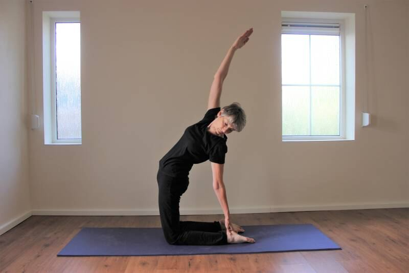
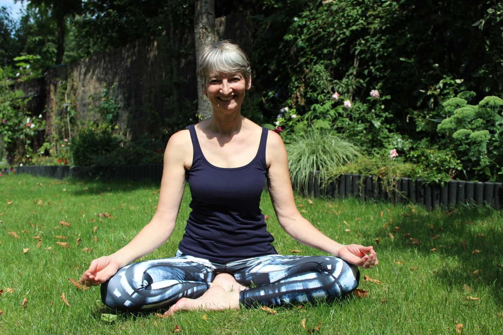
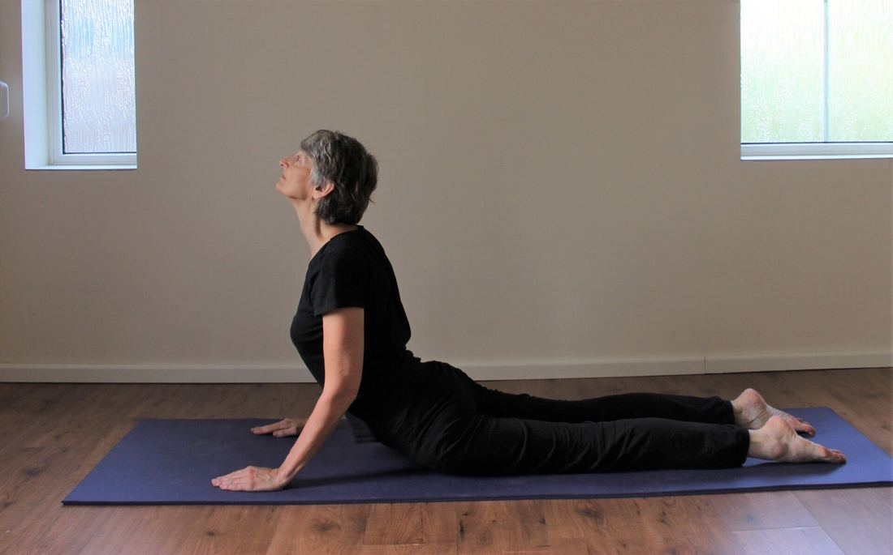
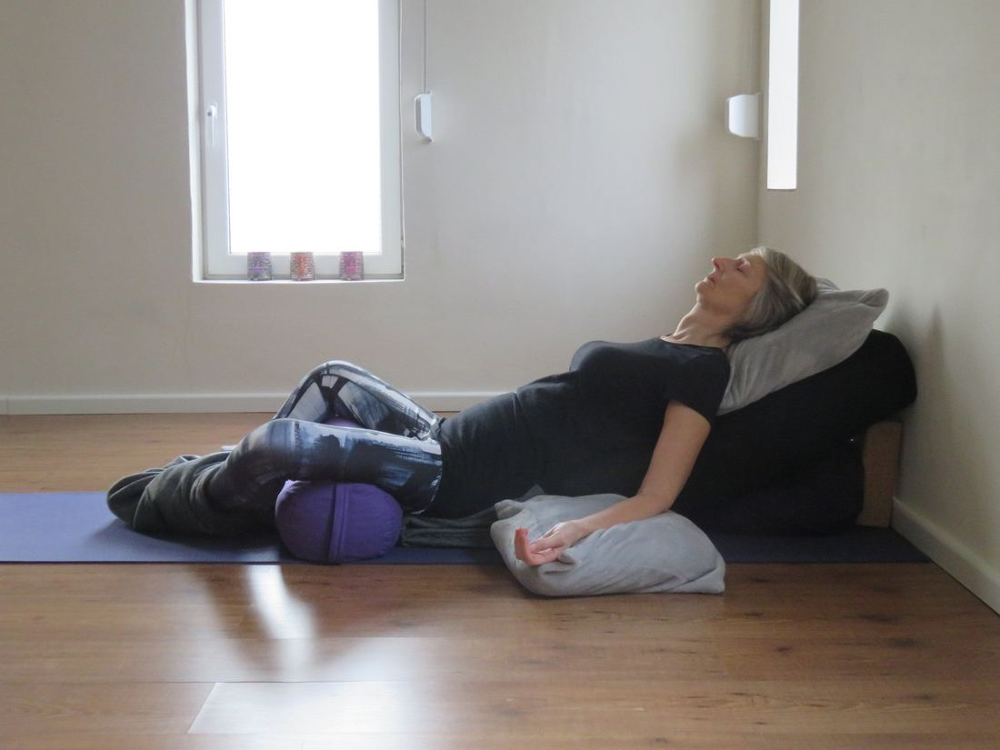
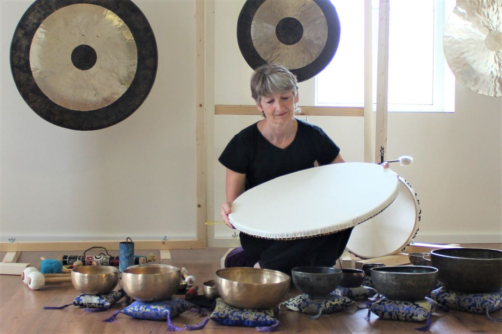
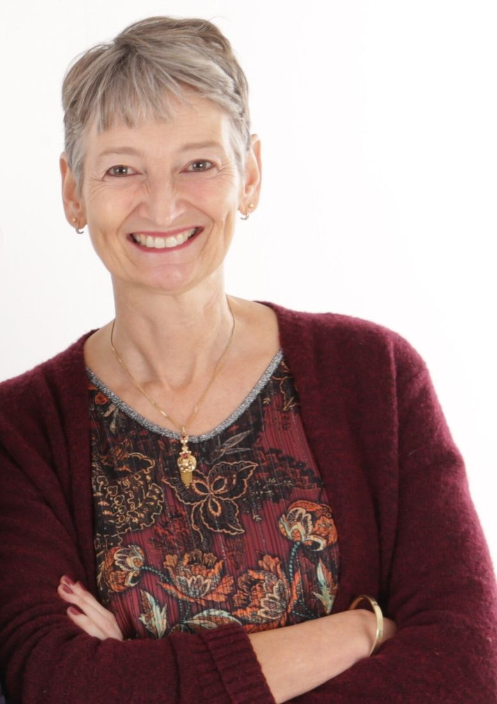
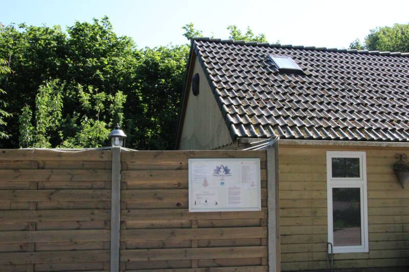
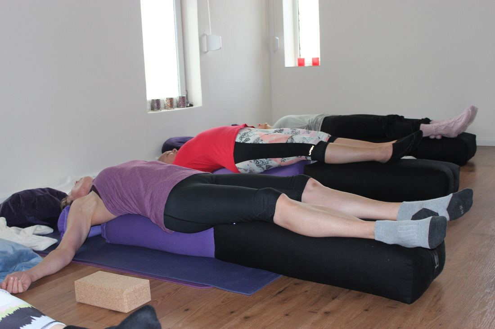
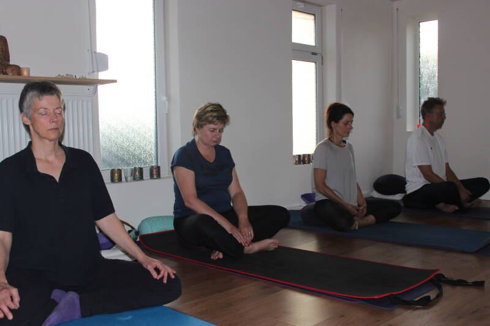
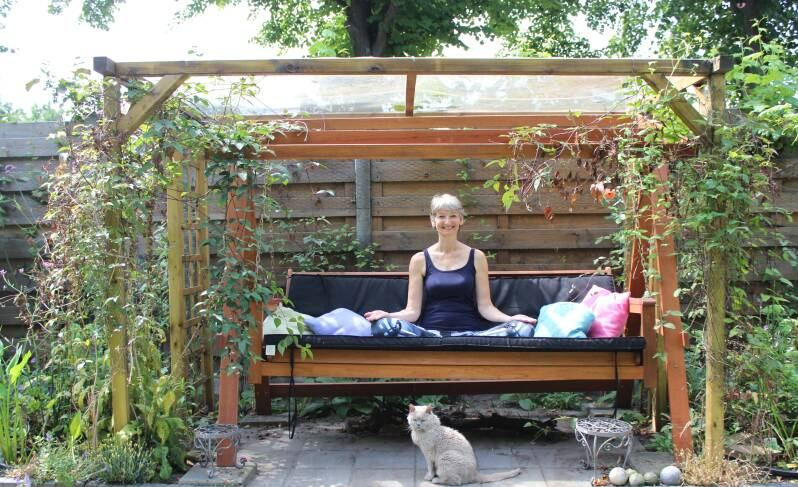

Hatha yoga
Houdingen en ademhaling die je lichaam sterker en soepeler maken en je hoofd tot rust brengen. Door inspanning tot ontspanning.
Ca. 70 min · 5x per weekMeer info

Yoga in kleine groepen, in een verbouwde schuur in het buitengebied van Oudenbosch. Al meer dan 17 jaar een vaste plek voor yoga, meditatie en rust.
De lessen zijn niet prestatiegericht en geschikt voor iedereen. Jij bepaalt zelf waar je grens ligt.

Houdingen en ademhaling die je lichaam sterker en soepeler maken en je hoofd tot rust brengen. Door inspanning tot ontspanning.

Minstens drie minuten ontspannen in een houding blijven. De zwaartekracht doet het werk, tot diep in je gewrichten en bindweefsel.

Helemaal ondersteund door kussens liggen en niets hoeven doen. Yoga voor je zenuwstelsel, fijn bij stress, slecht slapen of herstel.
Je kiest een vaste lesdag en volgt de lessen in blokken van 10 weken. Zit je les vol? Dan zetten we je vrijblijvend op de wachtlijst.
Eén keer meedoen met hatha of yin yoga en de sfeer proeven. Restorative yoga proberen kost € 10.
Proefles aanvragenMeenemenEen grote handdoek of je eigen mat. Matten en kussens zijn er.
Les gemist?Inhalen kan in hetzelfde blok, als er plek is.
AfmeldenGraag zo snel mogelijk, het liefst via WhatsApp of mail.
OpzeggenTwee weken voor het einde van een blok.

Naast de wekelijkse lessen zijn er losse avonden en dagen, ook als je geen cursist bent. Je schrijft je per keer in.

Yogacentrum Yanara is van Ynette Wilde. Ze is gediplomeerd yogadocent in hatha, yin, restorative, senioren- en stoelyoga en meditatiebegeleiding, en volgde een klankschalenopleiding. Ze blijft zich bijscholen, onder meer in yoganidra en trauma sensitieve yoga.
Haar wens was een klein yogacentrum. Dat werd haar verbouwde schuur, waar ze met hart en ziel lesgeeft.
Een lichte lesruimte in een verbouwde schuur, met een tuin eromheen.




Vraag een proefles aan of stel je vraag. Bellen of appen mag natuurlijk ook.
Vraag gerust welke les bij je past of waar nog plek is. Kom daarna een keer langs voor een proefles.
Laat je gegevens achter en kies welke les of workshop je wilt proberen. Je hoort snel van ons.
Je hoort zo snel mogelijk van ons.